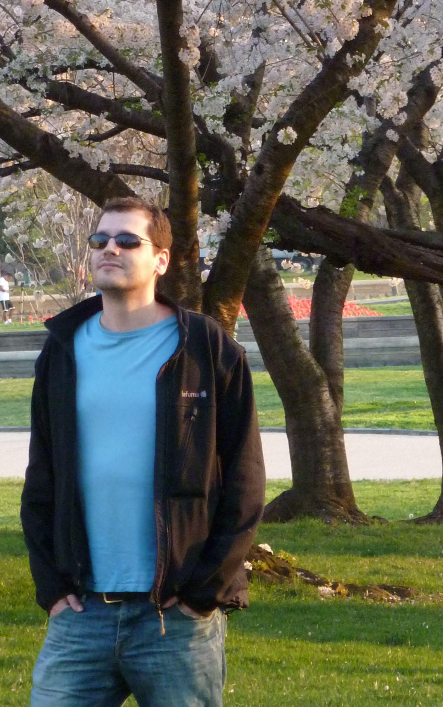

Latest news
- I am co-organising the Transformers+RNN: Algorithms to Yield Simple and Interpretable Representations (TAYSIR) Competition during this 2023 winter. Come and play!
- Our paper « Plasma nanoDSF Denaturation Profile at Baseline Is Predictive of Glioblastoma EGFR Status » has been accepted for publication at the journal Cancers. This is a joint work with Stéphane Ayache,Philipp O. Tsvetkov, Shanmugha Sri Kalidindi,Viktoriia E. Baksheeva,Sébastien Boissonneau,Carine Jiguet-Jiglaire, Romain Appay, Isabelle Nanni-Metellus, Olivier Chinot, François Devred, and Emeline Tabouret
- Our paper « Distillation of Weighted Automata from Recurrent Neural Networks using a Spectral Approach » has been published at the Machine Learning journal (authors' version). This is a joint work with Stéphane Ayache.
- Our paper « An AI-powered blood test to detect cancer using nanoDSF » has been accepted for publication at the journal Cancers. This is a joint work with Philipp O. Tsvetkov, Stéphane Ayache, Anton A. Bougaev, Soazig Malesinski, Hamed Benazha, Svetlana Gorokhova, Christophe Buffat, Caroline Dehais, Marc Sanson, Franck Bielle, Dominique Figarella Branger, Olivier Chinot, Emeline Tabouret, and François Devred. Check our video abstract!
- We just release a python demo code of our algorithm to extract a weighted automaton from a RNN!
In Short
I am a « maître de conférences » (that corresponds to an associate/junior professor tenure position) at the IUT of Saint-Etienne of the University Jean Monnet since December 2020. I held a similar position at the Aix-Marseille University between 2007 and 2020.
I am a member of the Hubert Curien Laboratory and part of its Data Intelligence team. Formerly, I was a member of the Laboratoire d’Informatique et Systèmes where I work within the team QARMA (Marseilles Machine Learning Team).
I did my PhD on the learning of context-free languages, from positive or positive and negative non-structured sequences (strings). This work is known as the starting point of what is now called Distributional Learning (Alexander Clark has a nice and short presentation of the main ideas). When I arrived in Marseilles in 2007, I continued this line of work (moving to graph grammars and to string-to-string function learning, for instance), but my interest grew also into more common machine learning approaches. The proximity of a bunch of brilliant and friendly researchers interested in statistical machine learning, natural languages processing, or multi-media indexing and retrieval, created an exiting environment.
My latest work deals with the interpretability and explainibility of deep learning black-boxes, in particular of Recurrent Neural Networks.
One can find more detail in my personal résumé [Last update: March 2021.
Oldies
- I was one of the chairs of the 15th International Conference on Grammatical Inference that was held on-line in August 2021.
- Our paper title « Learning with Partially Ordered Representations » was presented at MOL 2019. This is a joint work with Jane Chandlee, Jeffrey Heinz, Adam Jardine, Jonathan Rawski.
- I defended my Habilitation à diriger des Recherches (HRD) on July 16th 2019.
- On August 2nd 2019, I gave a talk at the workshop Deep Learning and Formal Languages: Building Bridges hold during ACL 2019.
- I was involved in the new Master program Master Informatique, parcours Intelligence Artificielle & Apprentissage Automatique (IAAA) (Artificial Intelligence & Machine Learning) that opens in September 2018.
- I was the chair of the International Conference on Grammatical Inference steering committee, 2014-2018.
- With my colleague Cécile Capponi, we gave a week long professional formation at Leroy Merlin headquarter, on “Introduction to Machine Learning: from bases to deep learning”
- I recently participated to the creation of a toolbox for the spectral learning of weighted automata (scikit-splearn): everything is described here.
- I co-organized with Tobias Kappe, Guillaume Rabusseau, and Matteo Sammartino the third edition of the LearnAut workshop, at LICS 2019. It was on learning, logic, automaton, and other related topics.
- I was part of the organisation of the Treize Minutes Marseille between 2014 and 2018. The videos of previous editions are available on the website.
- I was a member of the program committee of the International Conference in Grammatical Inference (ICGI 2018).
- I organized with Jeffrey Heinz, Guillaume Rabusseau, and Matteo Sammartino the second edition of the LearnAut, workshop at FLoC 2018. It is on learning, logic, automaton, and other related topics.
- I participated to the organisation of Quatrième cycle de conférences MPCI on « L’informatique au coeur des sciences » (Computer Science in the Core of Sciences). It was in Marseille on 22-24 May 2018
- I organized with Borja Balle and Leonor Becerra the first edition of the LearnAut workshop at LICS 2017 (it was in Reykjavik, Iceland, on June 19th 2017)
- I co-organized the Sequence Prediction Challenge (SPiCe) a machine learning competition about sequential prediction. For the competition I developed a spectral learning toolbox with François Denis, Denis Arrivault, and Dominique Benielli called Sp2Learn.
- I was a member of the program committee of the francophone conference in Machine Learning CAp 2016 and in charge of part of its organisation. It was nice to see you all during July 2016 in Marseille!
- I had a sabbatical in 2012 (thanks CNRS!) and passed the year at the University of Maryland, Baltimore County as a visiting researcher.
- The web site of the Master I2A that I was in charge of is available here.
- The PASCAL2 Bootcamp is over but you can find photos and more on the facebook page.
- I was a member of the organisation and scientific committees of the PAutomaC competition.